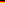
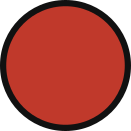
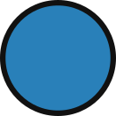
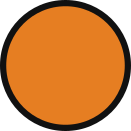
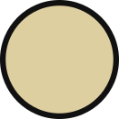

Générateur Catan
Options :
Nombre
Mer
Colonie
Route
Forcer le désert au centre
Même ressources peuvent se toucher
Même nombres peuvent se toucher
6 et 8 peuvent se toucher
2 et 12 peuvent se toucher
2 et 12 peuvent être sur la même ressource
Ports équilibrés (Pas de ressource forte (6 ou 8) adjacente à son port 2:1)
Équilibre global des points de probabilité (7-11 autour de chaque sommet)
Somme mini par ressource (11 pour bois/blé/mouton, 9 pour argile/minerai)
Niveau
Aléatoire
Moyen
Strict




Génération
Niveau :
Ratio :